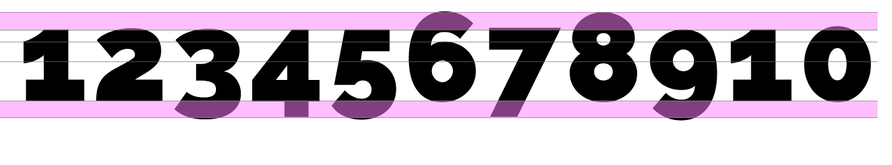
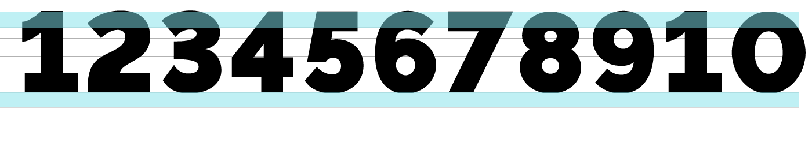

Minuskel- &
Majuskelziffern
Die beiden Begriffe Minuskel und Majuskel sind im Grunde genommen Synonyme für Klein- und Grossbuchstaben. Nun denkt man sich vielleicht, was das mit Ziffern zu tun hat. Doch auch hier gibt es Unterschiede. Betrachten wir zuerst die Majuskelziffern: Darunter versteht man Ziffern, welche die gleiche Höhe wie Versalien vorweisen. Bei solchen Ziffern tritt oft das Problem auf, dass sie im Lauftext unruhig wirken und dadurch stark ins Auge fallen. Dann ist zu empfehlen, diese im Lauftext zu verkleinern. So wird die zuvor genannte Problematik optisch etwas ausgeglichen. Gezielt angegangen wird diese typografische Unschönheit jedoch mit den sogenannten Minuskelziffern:
Minuskelziffern
Majuskelziffern
Johannes Gutenberg (1400–1468) war ausschlaggebend für die Durchsetzung der Arabischen Zahlenschreibweise in Europa. Davor wurden vor allem die Römischen Ziffern verwendet. Mit den Minuskelziffern (alternativ Mediävalziffern) entstanden Zahlen, die wie Kleinbuchstaben eine Ober- und Unterlänge vorweisen. Dies hat den Vorteil, dass sie sich im Lauftext besser ins Schriftbild einfügen. Weiter unterscheidet man zwischen proportionalen und nichtproportionalen Minuskel-/Majuskelziffern. Die Proportionalen Ziffern sind dicktengleich (Abstand vor und nach der Ziffer) und werden dementsprechend vor allem für Tabellen eingesetzt.
Anwendung
Lauftext
Minuskelziffern
Um den Vergleich der Minuskel- und Majuskelziffern aufzuzeigen schreibe ich hier 7 Zeilen Text mit ca. 300 Zeichen. Dabei ist zu sehen, dass sich die 5 Minuskelziffern wesentlich besser ins Gesamtbild einfügen als die 7 Majuskelziffern.
Majuskelziffern
Um den Vergleich der Minuskel- und Majuskelziffern aufzuzeigen schreibe ich hier 7 Zeilen Text mit ca. 300 Zeichen. Dabei ist zu sehen, dass sich die 5 Minuskelziffern wesentlich besser ins Gesamtbild einfügen als die 7 Majuskelziffern.
Raleway
Die Schrift Raleway wird als Serifenlose neo-grotesk Schrift klassifiziert. Sie wurde 2010 von Matt McInerney entworfen. Die Klassifizierung Grotesk entstand erst Anfangs 19. Jahrhunderts in England. Eigenschaften: reduziert, geradlinig, serifenlos. Einzigartige Details zeichnen die Raleway aus. Markant ist z.B. der Buchstabe «w».
Buch: «Satztechnik und Typografie», Band 1, Typografische Grundlagen, comedia-Verlag Bern
Buch: «Schrift wirkt», Verlag Herrmann Schmidt Mainz, Jim Williams und Gesine Hildebrandt
Weblink: https://www.typolexikon.de/majuskelziffern/
Weblink: https://www.typolexikon.de/tabellenziffern/
Weblink: https://medium.com/@kellyann.crean/raleway-51b68bbc8a11
Weblink: https://de.wikipedia.org/wiki/Grotesk_(Schrift)